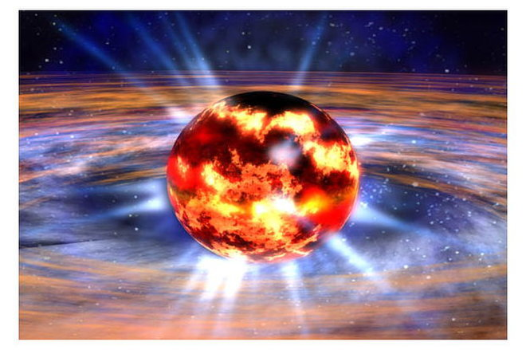

Forrige side

Velkommen til del 1G! Her skal vi en tur innom kvanteverdenen. Når vi senere skal lære om døende stjerner så trenger vi å forstå litt om gasser som har ekstremt høy tetthet. Disse gassene oppfører seg ikke lenger som ideele gasser. Faktisk ikke i det hele tatt. Det skal vi se på her. Men for å forstå det, trenger vi bittelitt kvantefysikk. Deltajene om dette får du i senere semester.(illustrasjon: En nøytronstjerne består av degenerert kvantegass (NASA/Dana Berry)Neste side
Neste side